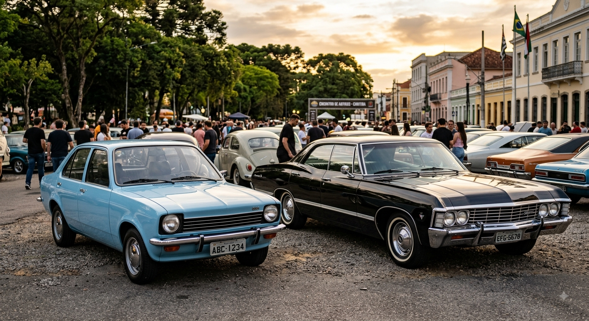

Meu primeiro post
Por: Arthur Tavares
Boas-vindos ao meu novo blog! Aqui vou compartilhar dicas sobre o universo dos carros, os modelos mais famosos da história e as principais novidades do mercado automobilístico.
Aqui vou compartilhar curiosidades sobre o mundo automotivo novo e antigo.

Por: Arthur Tavares
Boas-vindos ao meu novo blog! Aqui vou compartilhar dicas sobre o universo dos carros, os modelos mais famosos da história e as principais novidades do mercado automobilístico.